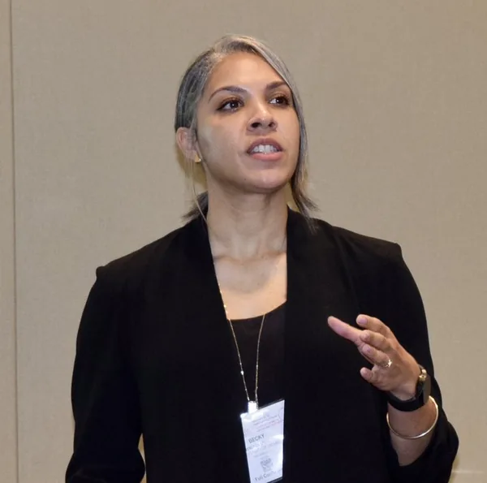
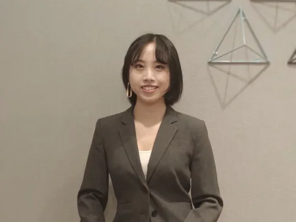
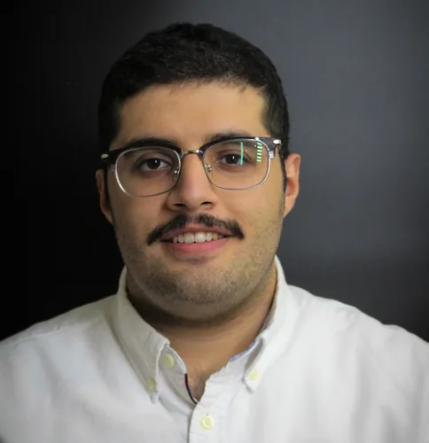
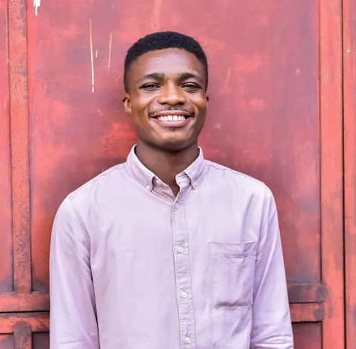
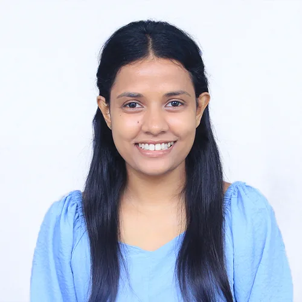
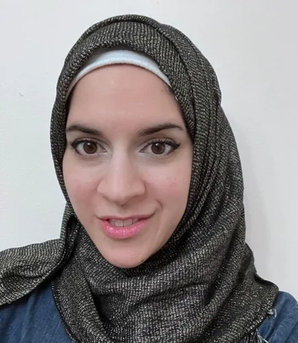
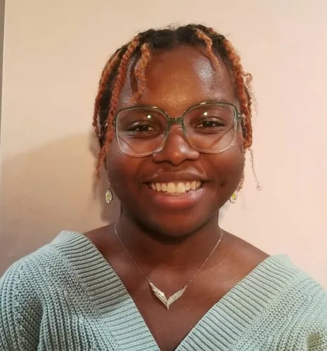

People
Current members of the Lindsey Lab.
Principal Investigator

Rebecca K. Lindsey, Ph.D.
Dow Corning Assistant Professor of Chemical Engineering, and by courtesy, of Applied Physics, Nuclear Engineering and Radiological Sciences, and Materials Science and Engineering
Prior to joining U-M, Dr. Lindsey led various research teams within the Energetic Materials Center at Lawrence Livermore National Laboratory. Her work in computational chemistry, for which applications have spanned sorption in soft materials, possible mechanisms for the origins of life, detonation synthesis of unusual carbon nanoparticles, and more, has been underpinned by a strong interest in developing tools enabling work in previously inaccessible problem spaces. In addition to her work in computational chemistry, she leverages data science and machine learning to aid in interpretation of large experimental datasets and to develop material performance models from them.
Education
- Ph.D. Chemical Physics, University of Minnesota, 2016
- M.S. Chemical Physics, University of Minnesota, 2012
- B.S. Chemical Engineering, Wayne State University, 2010
Prior experience
- Staff Research Scientist, Lawrence Livermore National Laboratory (2018–2022)
- Postdoctoral Scholar, Lawrence Livermore National Laboratory (2016–2018)
Appointments
- Founding Director, Center for Simulation and Data Intensive Research in Chemical Engineering (CSiDIR)
- Visiting Scientist, Lawrence Livermore National Laboratory
- Editorial Board Member, KIM Review
- Co-Editor, Proceedings of the APS Conference on the Science of Compression of Condensed Matter
- Advisory Board Member, Institute of Computational Science & Engineering
- External Advisory Board Member, ACCESS
Selected awards
- 2025 – APS Neil Ashcroft Early Career Award for Studies of Matter at Extreme High Pressure Conditions
- 2024 – MRS Communications Early Career Distinguished Presenter
- 2023 – AIChE Computational Molecular Science and Engineering Forum Young Investigator Award
- 2019 – LLNL Physical and Life Sciences Directorate Research Award
- 2018 – Springer Poster Prize, Foundations of Molecular Modeling and Simulation
- 2016 – ACS Colloids Division Poster Prize
- 2015 – J. Mater. Chem. Poster Prize, Foundations of Molecular Modeling and Simulation
- 2012 – NSF Pan-American Advanced Studies Institute Award
- 2009 – AIChE National Meeting Student Poster Prize
Postdoctoral fellows
Dr. Vallabh Vasudevan
Postdoctoral Fellow
Ph.D. Materials Science and Engineering, Monash University; M.Eng. Chemical Engineering, Nanyang Technological University; B.Tech. Chemical Engineering, National Institute of Technology
Google Scholar · LinkedIn · ORCID
Research interests
“I am interested in the application of computational techniques towards identifying and understanding key interactions that drive materials chemistry. I have worked on application of atomistic modeling towards biomass conversion and magnesium electrochemistry. I am excited by the unique window provided by computational techniques into physical and chemical interactions around us.”
Hobbies: Reading, quizzing, taking a walk, watching movies and watching sports, mostly football (aka soccer in the US) and cricket.
Graduate students
Yanjun Lyu
Ph.D. Student, Materials Science and Engineering
M.S. Materials Science and Engineering, University of Michigan; B.Eng. Materials Science and Engineering, Wuhan University of Technology
Research interests
“I am interested in application-oriented material microstructural design and the discovery of new materials. I have a passion for applying computational methods and tools for the enlightenment of advanced materials discovery and design.”
Hobbies: Traveling, cooking, playing piano, appreciating performance cars.

Melody Zhang
Ph.D. Student, Chemical Engineering (co-advised with Prof. Sharon Glotzer)
B.S. Chemical Engineering, Purdue University
Google Scholar · LinkedIn · ORCID
Research interests
“I am interested in understanding the scientific principles of particle systems and using computational methods to introduce breakthroughs in material design. I am excited to use machine learning and atomistic simulation to accelerate this progress.”
Hobbies: Biking, hiking, baking & decorating cakes, reading, listening to pop music, watching forensic movies/TV shows.

Sayed Ahmad Almohri
Ph.D. Student, Chemical Engineering
M.S. and B.S. Chemical Engineering, University of Michigan
Google Scholar · LinkedIn · ORCID
Research interests
“I want to explore the boundaries of science through novel technologies and scientific computing methods. I am interested in particle and atomistic simulations, multiscale modeling, and complex systems.”
Hobbies: Cooking, playing and watching football (aka soccer in the US), and sometimes watching squirrels.
Benjamin Laubach
Ph.D. Student, Chemical Engineering
B.S. Chemical Engineering, Michigan State University
Google Scholar · LinkedIn · GitHub
Research interests
“I am interested in applying machine learning techniques to atomistic modeling with the goal of aiding in the discovery of new materials.”
Hobbies: Basketball, card games, spending time with friends and family, college sports, true crime podcasts.
Thomas Sundberg
Ph.D. Student, Chemical Engineering
B.S. Chemical Engineering, Kansas State University
Research interests
“I am interested in the discovery of new materials as well as the development of the processes used to make them. I look forward to doing this by applying machine learning and simulation techniques.”
Hobbies: Cooking, coffee shops, and listening to music.

Awwal Oladipupo
Ph.D. Student, Chemical Engineering
B.S. Petroleum and Gas Engineering, University of Lagos
Google Scholar · LinkedIn · GitHub
Research interests
“I am interested in leveraging computational techniques, such as machine learning, atomistic simulations, multiscale modeling, and software engineering, to accelerate the discovery and design of novel materials. I aim to harness these techniques’ power to gain a deep, atomistically-resolved understanding of intricate phenomena.”
Hobbies: Listening to music, cooking, watching sci-fi movies, reading and coding.
Pratyush Dhal
Ph.D. Student, Chemical Engineering (co-advised with Prof. Ron Larson)
B.Tech. Chemical Engineering, NIT Warangal, India
Research interests
“I am interested in developing new models that aid in material discovery and characterization by applying the power of machine learning and AI to molecular simulations.”
Hobbies: Piano, quizzing, poetry, philosophy, cooking, vlogs.

Poornima Moremada
Ph.D. Student, Chemical Engineering
B.S. Chemical & Process Engineering, University of Peradeniya
Google Scholar · LinkedIn · ORCID
Research interests
“I am interested in applying machine learning to characterize molecular simulations, to explore and discover new domains.”
Hobbies: Cricket, dancing, watching stand-up comedy.
Undergraduate researchers
Emeline Martin
Undergraduate Researcher, Chemical Engineering
Research interests
“I am interested in machine learning and simulation as it applies to thermodynamic principles. I appreciate how such technology can be applied to a variety of different industries, such as nano-materials and energy.”
Hobbies: Running, swimming, reading, and playing my viola.
Alumni

Dr. Safa Alzaim
Postdoctoral Fellow
Ph.D. Chemical Engineering, New Jersey Institute of Technology
